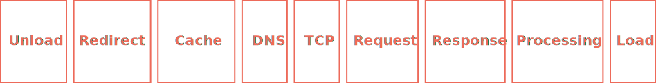
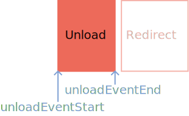
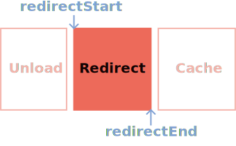
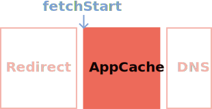
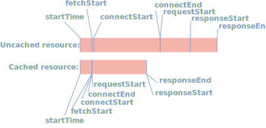
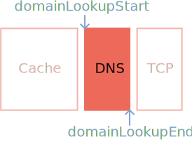
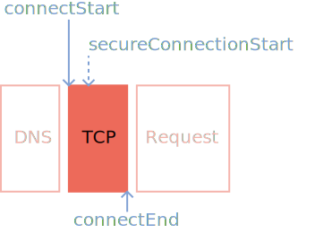
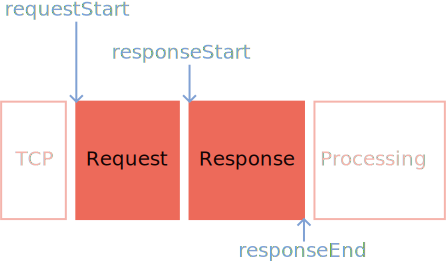
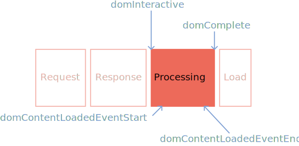
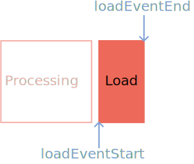

Hello,
I'm Jeremy!
Regarding
Testing methods
Synthetic testing
(or lab data)
Lighthouse
The case for:
- It's easy to do.
- Great for spot checking performance in local dev environments. (With network throttling, of course.)
- Easy to measure the effect of code changes on performance due to consistent baselines.
The case against:
It doesn't reflect what real users are experiencing.
Enter
Real User Metrics
(or field data)
The case for:
You're gathering metrics from real users who are using your site.
The case against:
It's not as convenient.
console.dir(performance.getEntriesByType("navigation")[0]);Navigation
and
Resource Timing
Navigation timing
Gathers page metrics.
(i.e., requests for HTML documents.)
Resource timing
Gathers resource metrics.
(CSS, JavaScript, images, et cetera.)
Processing Model
w3.org/TR/navigation-timing-2/#processing-model
Unload
When the document unloads.
Unload
Regarding
unload metrics
startTimeis always0for the current document.startTimeis greater than0for resources.unloadEventStartmay be0if there is no previous document, or if a previous document (or redirect) is not from the same origin.
Redirect
When a navigation encounters one (or more) HTTP 300 level status codes.
Redirect*
*Resource timing API processing model begins here.
Regarding
Redirect metrics
redirectStartandredirectEndwill be0if no redirects occur.- Redirects from and to other origins can still come up as
0if theTiming-Allow-Originheader isn't set.
App Cache*
When the browser begins to fetch an item.
*Technically a misnomer
App Cache
Regarding
App Cache metrics
fetchStartmarks the start of a resource fetch, including cache seek time.- If an item is cached, metrics that come after
fetchStartwill occur very nearly after.
Cached vs. uncached
DNS
When domain lookups occur.
DNS
Regarding
DNS metrics
-
DNS lookups can be cached at multiple levels:
- Browser (e.g.,
chrome://net-internals#dns). - System.
- Router.
- (Basically anywhere.)
- Browser (e.g.,
Connection
When connections are established.
Connection
Regarding
Connection metrics
- Connections can be resumed (i.e.,
Keep-Alive). secureConnectionStartwill be0for non-secure sites or if TLS sessions are resumed.
Request/Response
When requests are made, and when responses begin/end.
Request/Response*
*Resource timing API processing model ends here.
Processing
When the DOM is being processed.
Processing
Regarding
Processing metrics
domInteractivemarks when the browser has finished HTML parsing and DOM construction.domContentLoadedEventEndmarks when the DOM is ready.domCompletemarks when everything has loaded.
Load
When the page and all of its resources are fully loaded.
Load
Regarding
Load metrics
loadEventStartusually occurs briefly afterdomComplete.loadEventEndsignifies when the page has completely finished loading.
The little bits!
name
The URL of a document or resource.
transferSize
The size of a resource including headers.
encodedBodySize
The compressed size of a resource.
(Without headers.)
decodedBodySize
The decompressed size of a resource.
(Again, without headers.)
nextHopProtocol
The protocol used to transmit a resource.
nextHopProtocol values*:
h2(HTTP/2)hq(QUIC)http/1.1
Timing recipes!
TTFB (ms)
let ttfb = responseStart - fetchStart; // 35.6001 msHeader size (bytes)
let headerSize = transferSize - encodedBodySize; // 169 bytesDNS lookup time (ms)
let dnsTime = domainLookupEnd - domainLookupStart; // 171.2999 msTCP time (ms)
let tcpTime = connectEnd - connectStart; // 93.5005 msSSL time (ms)
let sslTime = 0;
if (secureConnectionStart > 0) {
sslTime = connectEnd - secureConnectionStart; // 58.6002 ms
}Bonus materials!
Server Timing
Passes server side metrics to navigation timing.
w3c.github.io/server-timing
What Server-Timing
headers look like:
How Server-Timing
headers are visualized:
Paint Timing API
Exposes paint timings.
w3.org/TR/paint-timing
Try it in the console*:
performance.getEntriesByType("paint").forEach(paint => {
console.dir(paint);
});*Currently only in Chrome
Paint timing metrics:
Long Tasks API
Logs activity that blocks the main thread for a long period of time.
w3c.github.io/longtasks
What is a "long task"?
“Long task refers to an event loop that exceeds 50ms.”
— Long Tasks Spec, § 2.
var observer = new PerformanceObserver(function(list) {
var perfEntries = list.getEntries();
for (let i = 0; i < perfEntries.length; i++) {
console.dir(perfEntries[i]);
}
});
observer.observe({
entryTypes: ["longtask"] // <-- The good stuff
});*Will output nothing if no long tasks are detected after initializing the observer.
Long task metrics:
Quick tips!
Don't use
performance.timing
The case against
performance.timing
- Technically obsolete.
- Uses low resolution Unix timestamps.
Don't record
computed metrics
(Unless you know what you're doing.)
Always feature check:
// Check if we can do performance-y things
if ("performance" in window) {
if (performance.getEntriesByType("navigation").length > 0) {
// Do stuff with navigation timing
}
if (performance.getEntriesByType("resource").length > 0) {
// Do stuff with resource timing
}
if (performance.getEntriesByType("paint").length > 0) {
// Do stuff with paint timing
}
}Gather performance metrics with
PerformanceObserver
Using PerformanceObserver
var observer = new PerformanceObserver(list => {
var perfEntries = list.getEntries();
for (let i = 0; i < perfEntries.length; i++) {
// Do stuff with whatever comes in
}
});
observer.observe({
// Add performance entry types you want to observe here:
entryTypes: ["navigation", "resource", "paint", "longtask"]
});"This is a lot to remember."
End User Monitoring
End User Monitoring
Get a high level view of real user performance.
End User Monitoring
Visualize specific real user metrics.
End User Monitoring

Plot low level timing data per category over time.
appdynamics.com
Wrapping up!
With thanks to:
Estelle Weyl
@estellevw
Ilya Grigorik
@igrigorik
Shubhie Panicker
@shubhie
Charles Vazac
@vazac
Jatinder Mann
@jatindermann
Domenic Denicola
@domenic
Tobin Titus
@tobint
Todd Reifsteck
@toddreifsteck
Paul Irish
@paul_irish